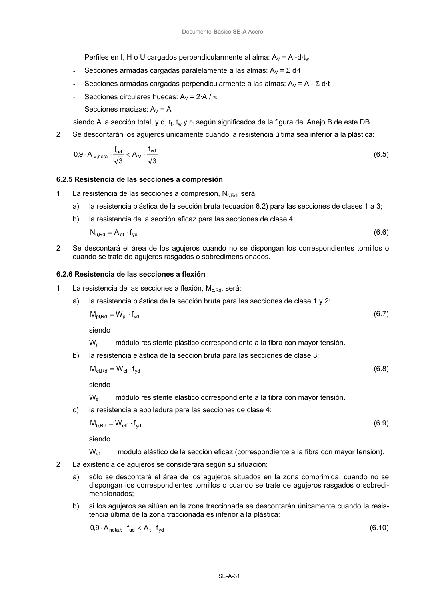
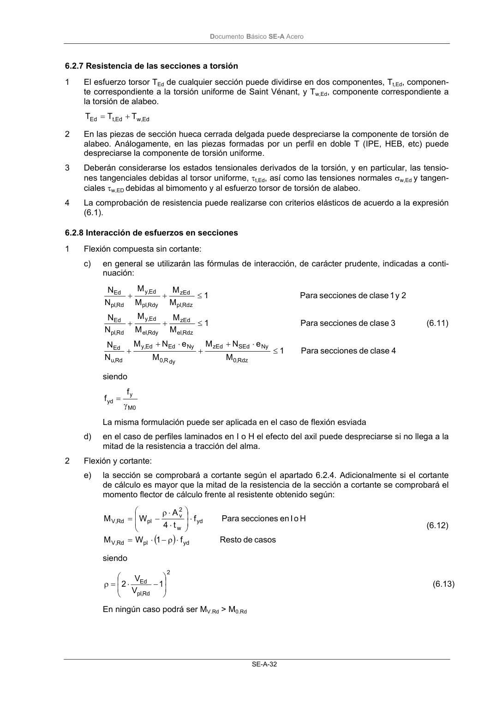

DB-SE-A · 6.2.6 Resistencia de las secciones a flexión · versión 2007-10-23 · capa oficial
Formatos: JSON compacto · Markdown · PDF fuente
Ámbito del documento · texto del ámbito · documento y tablas
ID técnico a0060 · PDF pág. 33-34 · jerarquía no validada por persona · contrastado con el literal de la página 33 (candidato tipográfico); no validado por persona · padre: raíz
6.2.6 Resistencia de las secciones a flexión 1 La resistencia de las secciones a flexión, Mc.Rd, será: a) la resistencia plástica de la sección bruta para las secciones de clase 1 y 2: yd pl Rd , pl f W M ⋅ = (6.7) siendo Wpl módulo resistente plástico correspondiente a la fibra con mayor tensión. b) la resistencia elástica de la sección bruta para las secciones de clase 3: yd el Rd , el f W M ⋅ = (6.8) siendo Wel módulo resistente elástico correspondiente a la fibra con mayor tensión. c) la resistencia a abolladura para las secciones de clase 4: yd eff Rd , 0 f W M ⋅ = (6.9) siendo Wef módulo elástico de la sección eficaz (correspondiente a la fibra con mayor tensión). 2 La existencia de agujeros se considerará según su situación: a) sólo se descontará el área de los agujeros situados en la zona comprimida, cuando no se dispongan los correspondientes tornillos o cuando se trate de agujeros rasgados o sobredi- mensionados; b) si los agujeros se sitúan en la zona traccionada se descontarán únicamente cuando la resis- tencia última de la zona traccionada es inferior a la plástica: yd t ud t, neta f A f A 9,0 ⋅ < ⋅ ⋅ (6.10) DocumentoBásico SE-A Acero SE-A-32


PDF fuente redistribuible: copia fiel enlazada en esta página (SHA256 verificado).